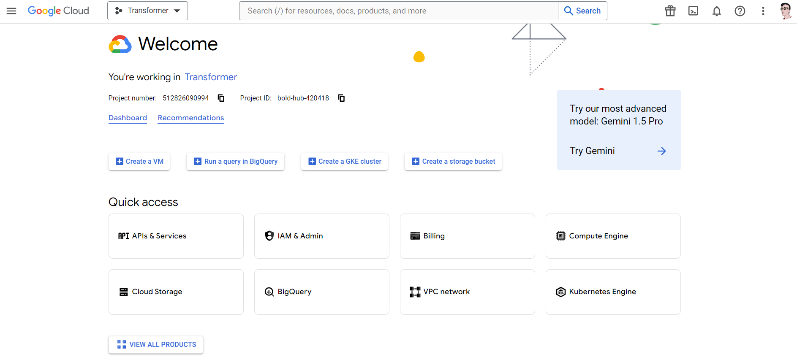
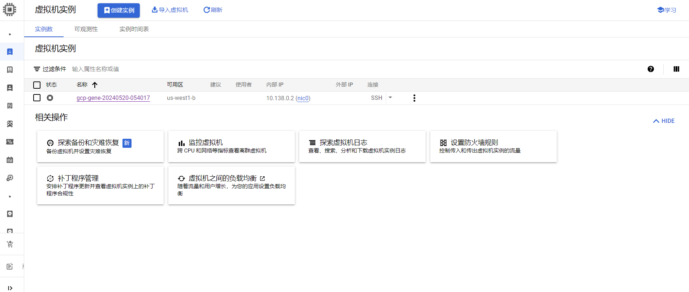
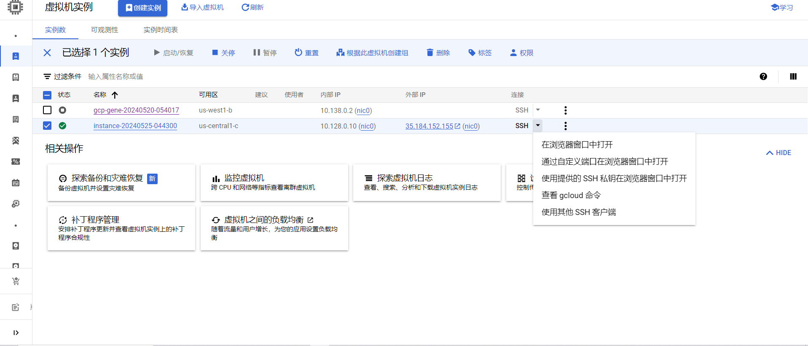
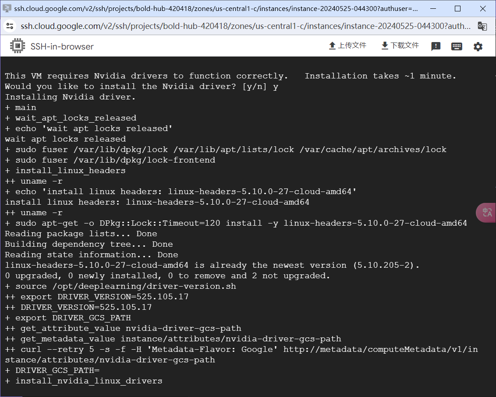
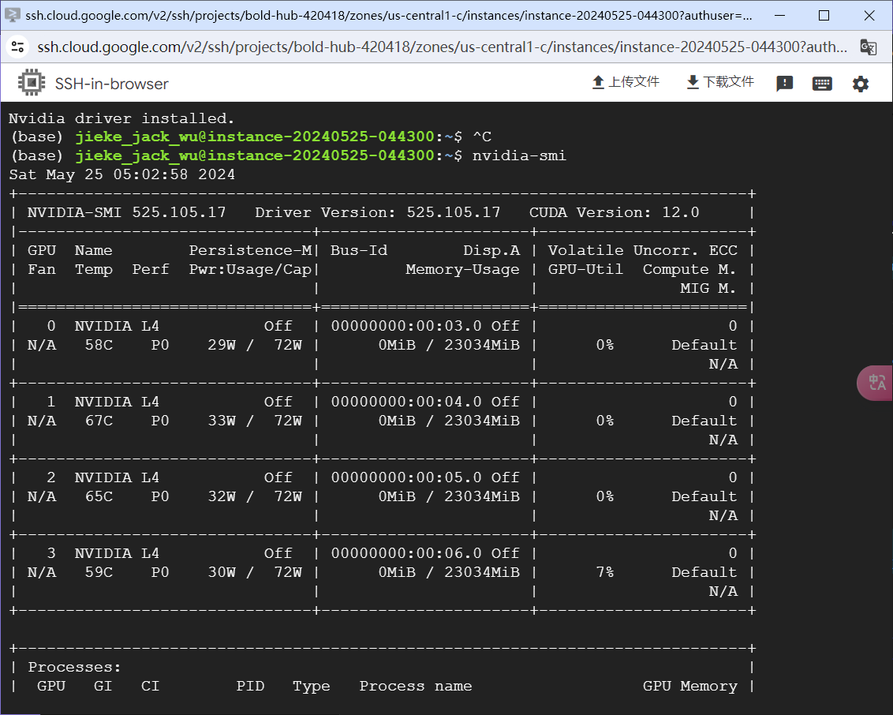
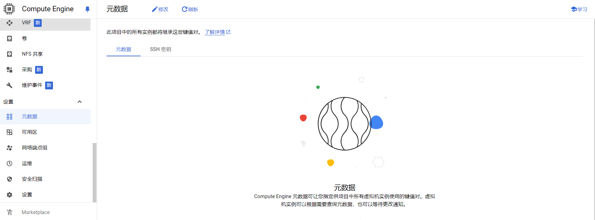

在GCP上建立虚拟机实例
创建实例
进入GCP网页后，会自动跳转到对应的项目的欢迎页下，如图所示：

随后点击Create a VM进入建立实例的页面，如图所示：

在这里，根据自己的需要选择合适的区域、机器配置、启动磁盘，设置对应的身份和 API 访问权限、防火墙、高级选项-网络等。
设置好后，就点击创建。
值得注意的是，有时会在每月估算费用那里显示缺少额度，只要点击下面的申请就可以了，一般10分分钟内就能通过请求。
在选择机器时，GPU的配置往往时重点，这个表格展示了GCP在不同区域提供的GPU的型号。
如此一来就可以在虚拟机实例界面中看到自己建立的vm了，如图：

ssh 连接
web连接
在建立好vm后，就可以使用ssh和vm连接了，这也很简单，如图所示：

只要点击在浏览器窗口打开就可以进入到vm中，如图所示：

这里因为我需要使用GPU所以选择了预装了nvidia和cuda的映像
最后虽然出现了这样的警告，但是不影响正常的使用
1 | WARNING: The nvidia-drm module will not be installed. As a result, DRM-KMS will not |
使用nvidia-smi也可以正常的显示，如图：

随后就可以正常的开展自己的任务了。
本地连接
web连接虽然很方便，但是因为我习惯使用vscode作为编辑器，并且在tmux中运行程序，所以，我需要把vm和本机🔗起来。而这也不难实现，只要建立好ssh密钥-公钥就好。
本地生成ssh密钥-公钥
进入Terminal，在windows上就是windows powershell，输入cd ~/.ssh进入了.ssh文件夹中。
然后输入ssh-keygen -t rsa -f ~/.ssh/gcp_test -C [user_name]，这里的user_name就是你的gcp的用户名，也就是从web登录后的xxx@mmm中的xxx；随后会要求你输入一个保存的文件名，不妨设置为gcp_test。
随后，设置.ssh中的config文件以方便使用ssh来连接vm:
1 | Host gcp-test |
远程设置公钥
然后输入cat gcp_test.pub来显示公钥，然后复制公钥。进入元数据，点击SSH密钥、修改，如图所示：

把自己的公钥复制其中。
或者，通过web设置公钥：
1 | cd ~/.ssh |
然后输入命令ssh gcp-test，连接到vm
连接到GitHub
为了工作方便，我需要使用GitHub+git来同步。
在vm中建立ssh
为了连接GitHub，我需要在vm中建立一个ssh私钥-公钥对：
1 | ssh-keygen -t rsa -b 4096 -C "your github email" |
我是直接全部enter也就是使用默认的文件路径并且不设置密码。
公钥部署到GitHub
然后，使用cat id_rsa.pub，显示了对应的公钥；进入GitHub中的ssh页面。把刚才复制的内容粘贴进去，并且起一个名字就好。
随后使用ssh -T git@github.com确认是不是成功连接到GitHub。
如此一来就实现了在本地对vm的连接并且连接vm到GitHub上
下载一些软件
在Linux中下载和安装aria2c、wget和git-lfs可以通过包管理器进行。以下是具体步骤：
安装aria2c
aria2c是一个轻量级的多协议、多来源的命令行下载工具。
Debian/Ubuntu
1 | sudo apt-get update |
CentOS/RHEL
1 | sudo yum install epel-release |
Fedora
1 | sudo dnf install aria2 |
安装wget
wget是一个命令行下载工具，支持HTTP、HTTPS和FTP协议。
Debian/Ubuntu
1 | sudo apt-get update |
CentOS/RHEL
1 | sudo yum install wget |
Fedora
1 | sudo dnf install wget |
安装git-lfs
git-lfs（Git Large File Storage）是Git的扩展，专门用于处理大文件。
Debian/Ubuntu
-
安装必要的依赖：
1
2sudo apt-get update
sudo apt-get install git-lfs -
添加Git LFS仓库并安装：
1
2curl -s https://packagecloud.io/install/repositories/github/git-lfs/script.deb.sh | sudo bash
sudo apt-get install git-lfs
CentOS/RHEL
-
安装必要的依赖：
1
2sudo yum install epel-release
sudo yum install curl -
添加Git LFS仓库并安装：
1
2curl -s https://packagecloud.io/install/repositories/github/git-lfs/script.rpm.sh | sudo bash
sudo yum install git-lfs
Fedora
- 添加Git LFS仓库并安装：
1
2curl -s https://packagecloud.io/install/repositories/github/git-lfs/script.rpm.sh | sudo bash
sudo dnf install git-lfs
验证安装
安装完成后，你可以使用以下命令验证各个工具是否安装成功：
1 | aria2c --version |
如果输出了相应的版本信息，则说明安装成功。
使用示例
-
aria2c:
1
aria2c http://example.com/file.zip
-
wget:
1
wget http://example.com/file.zip
-
git-lfs:
1
2
3
4
5
6git lfs install
git lfs track "*.psd"
git add .gitattributes
git add file.psd
git commit -m "Add design file"
git push origin main
通过以上步骤，你应该能够在Linux系统中成功安装并使用aria2c、wget和git-lfs。